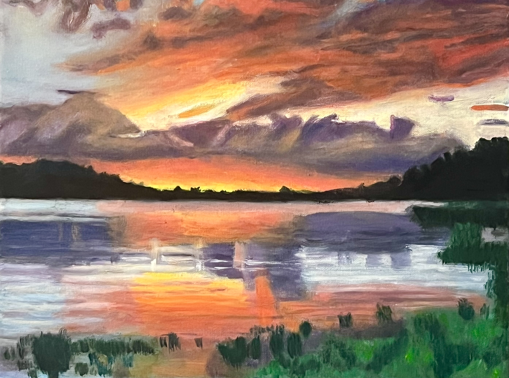
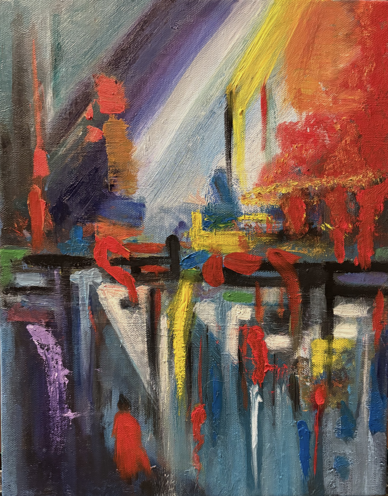
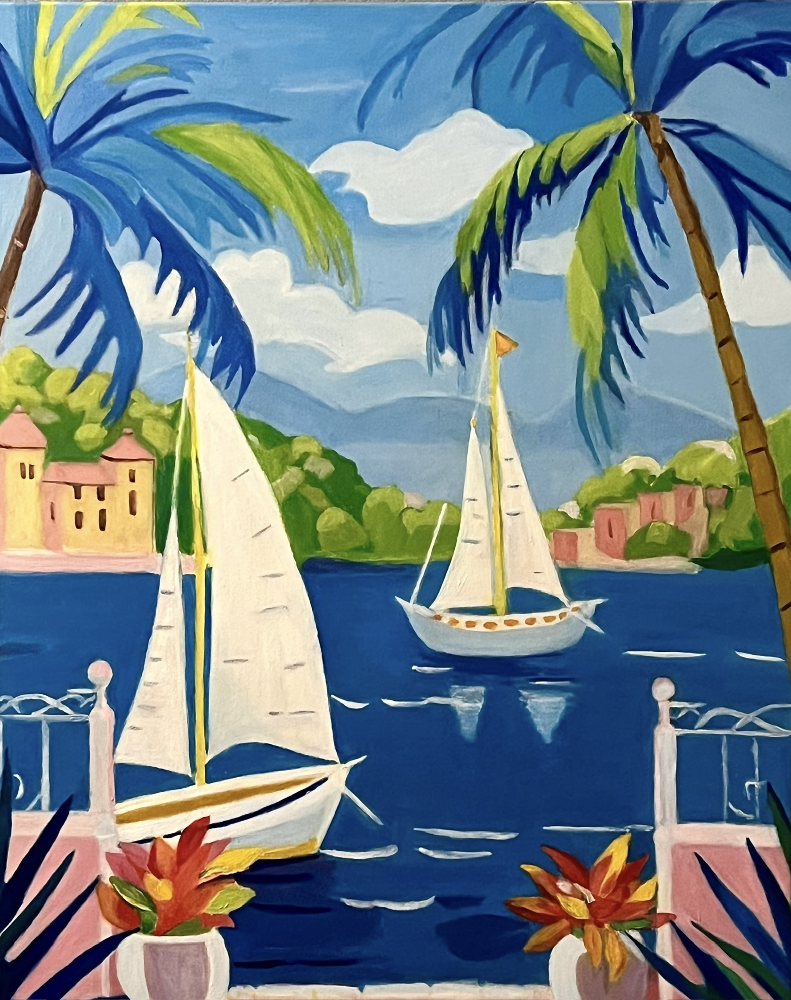

Best Seller Landscape paintings

Best Seller Abstract paintings

Prints
About the Artist
A self-taught artist, I transform a lifelong fascination with landscapes into expressive works that balance nature and emotion. Over the past two years, my practice has evolved into a focused exploration of atmosphere, texture, and feeling. Working primarily in landscape and abstract forms, each piece is an intimate reflection of a moment—captured through layered brushwork and a nuanced use of color. My paintings are not just visual compositions, but quiet experiences designed to evoke emotion and connection.